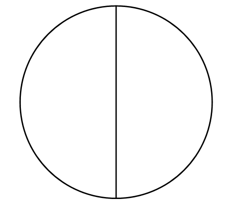
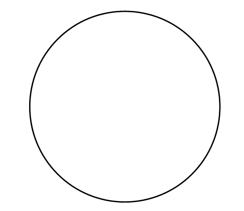
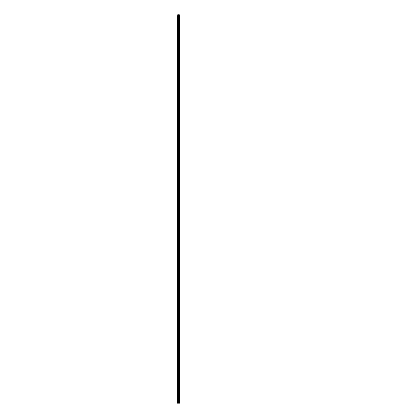
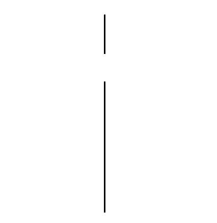
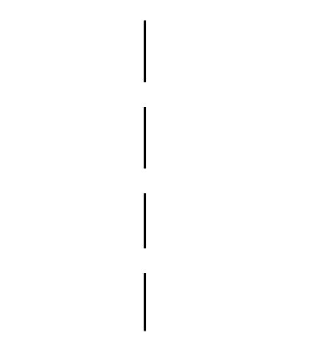

장구 - 굿거리장단
장구에서 왼손에 드는 것을 궁편[궁채], 오른손에 드는 것을 채편[열채]라고 한다.
덩[] - 궁편과 채편을 동시에 친다.
쿵[] - 궁편을 친다.
덕[] - 채편을 친다.
기덕[] - 채편을 빠르게 두 번 친다.
더러러러[] - 채편을 빠르게 네 번 이상 친다.(채편을 굴려 친다)
굿거리 장단
굿거리장단을 사용한 예 - 아름다운 나라
오디오가 지원되지 않습니다. 따로 한번 찾아보세요!